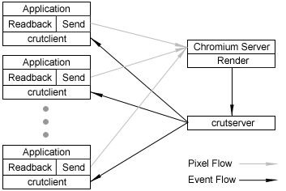
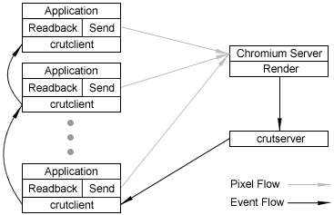

Disclaimer: CRUT is still in its testing phase. This documentation is provided to help people get to know CRUT, but with no warranty that everything works exactly as described. For more information of help using CRUT, contact Dale Beermann.
New: CRUT now works with Windows as well. It is not possible to render into the crutserver, but CRUT could be useful for users running a display wall under windows.
CRUT is the Cluster Rendering Utility Toolkit for Chromium. It allows for applications to be written that allow for user interaction through a distributed event system. The client-side API for CRUT was designed after GLUT so that it is easy to use for people who already know GLUT, and so that applications can be ported to Chromium easily. CRUT does not support every feature of GLUT, but does provide a major subset.
Configuring CRUT requires a few lines to be added to the Chromium configuration files. A few different example configurations are provided, crut_fan.conf, crut_ring.conf, and crut_proxy.conf. They are examples of different network configurations. Because of the latency of a network, it may be beneficial to define different configurations of how events propagate through the system. The figures below depict two possible configurations, a "fan" configuration, where the event server (crutserver) sends each event to every client, and a "ring" configuration, where the event server sends the event to one client, and the messages are cascaded through the system. The crut_proxy.conf file is an example of a configuration using a proxy server. The proxy server can sit between the event server and the clients, to receive events from the server and distribute them to the clients in some manner. It is unlikely that most users will be using this for a while.
 
The only lines that were added to the original configuration files look like this:
renderspu.Conf('render_to_crut_window', 1 )
...
crutserver = CRUTServerNode( )
crutserver.Conf('window_geometry', [100, 100, 400, 400] )
...
appnode1.AddCRUTServer( crutserver , protocol='tcpip', port=9000 )
...
appnode2.AddCRUTServer( appnode1 , protocol='tcpip', port=9001 )
The first line tells the renderspu that it will be rendering into a window managed by the crutserver. The second and third lines define a crutserver node, the fourth and fifth define the event server for each client. This is an example of the ring configuration, where one client is receiving events from another, which is in turn receiving events from the crutserver. That's really all that has to be done for the configuration file, now you need to know how to incorporate CRUT into your own applications.
NOTE: It is not necessary, nor will it be desirable in many circumstances
to render into a window put up by the crutserver. Display Walls, for example, can benefit from
having a dedicated event server sitting in the viewing room. This is
possible by commenting out the 'render_to_crut_window' option, and making
the crutserver a dedicated node on a separate computer ( crutserver
= CRServerNode('event_host') where event_host is the
computer in the viewing room ).
So far there is only one example application provided with the Chromium distribution that uses CRUT, called psubmit_crut, it should serve as a good reference. The application psubmit_crut is a modification of the psubmit application that allows events to be handled. The application provides examples of mouse, keyboard, motion, and menu event handling. Important: If you are planning on using the crutserver to handle CRUT menus, then you will need the Expat XML Parsing Library. The important part of the code is shown below:
ctx = crutCreateContext(visual);
crutDisplayFunc(DisplayRings);
crutMouseFunc(mouse);
crutKeyboardFunc(keyboard);
crutMotionFunc(motion);
...
crutInitClient();
...
crutMainLoop();
The important thing to notice is that all callbacks and menu definitions
pertaining to CRUT should be done before crutInitClient. This is because crutInitClient must tell the mothership what events the
client is expecting, as well as some other parameters. The function
crutMainLoop functions similarly to
glutMainLoop, except that every time it
loops it is checking for any events received over the Chromium network
layer. One important thing to note is that crutMainLoop is not necessary. We designed CRUT so that
the application would not have to give up control to CRUT if it didn't
want to. This way, an application can be written that checks for events
whenever it wants, using crutCheckEvent,
which is non-blocking, or crutReceiveEvent,
which is the blocking version.
Currently crutCreateContext must be used to
create a rendering context. In the future, we intend to implement a local
version of CRUT that will put up a window so that debugging is made
easier. That should be just about all you need to know to start
implementing your own programs using CRUT. However, there are currently a
few dependencies you need to be aware of when running your application
with Chromium. At least one crappfaker must be
started before the crutserver can be started,
and the crutserver must be started before the
crserver. This is because the crutserver needs to know what events it will be sending
across the network, which it finds out from the client, and the
crserver needs to know what window it will be
rendering into, which it finds out from the crutserver.
Note: If you're a Chromium developer and have made symlinks pointing from libGL.so and libGL.so.1 to libcrfaker you'll have to remove those symlinks in order for CRUT to work.